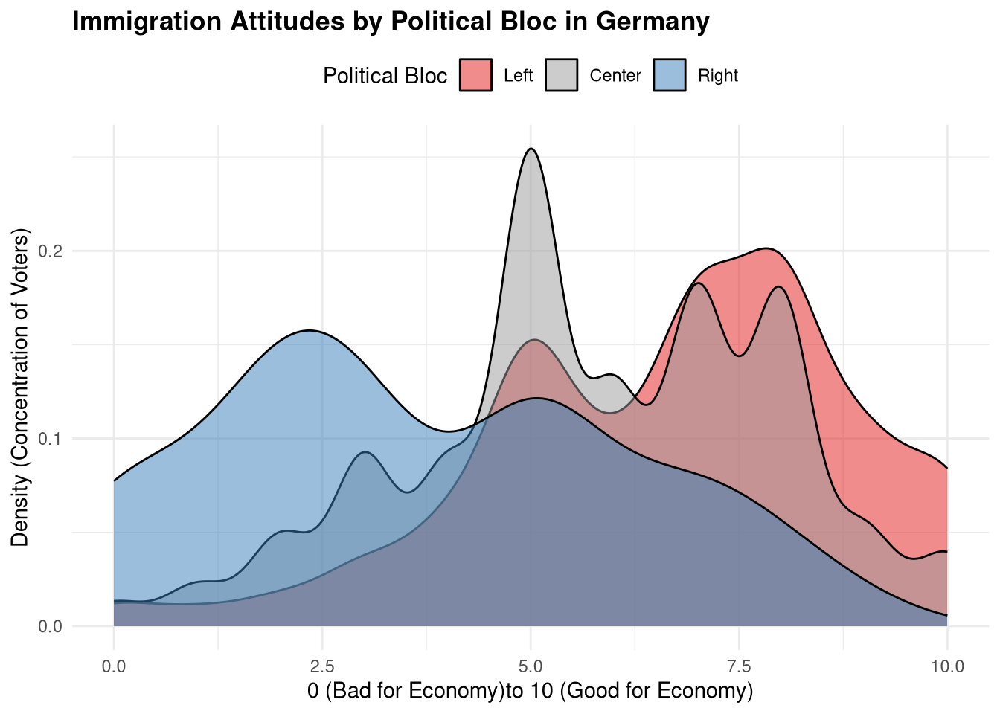
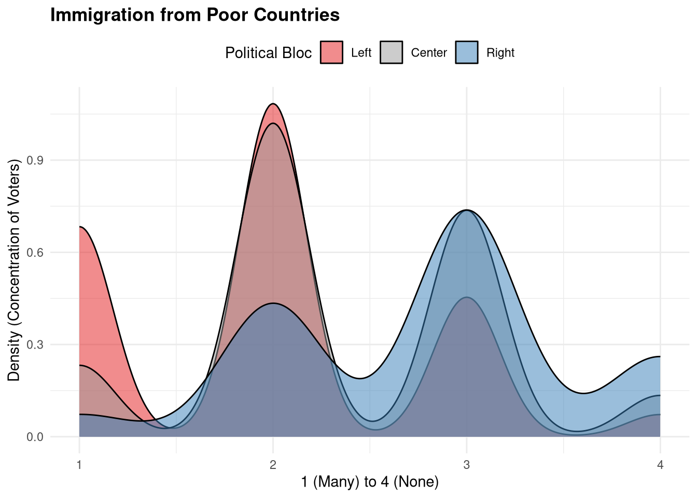
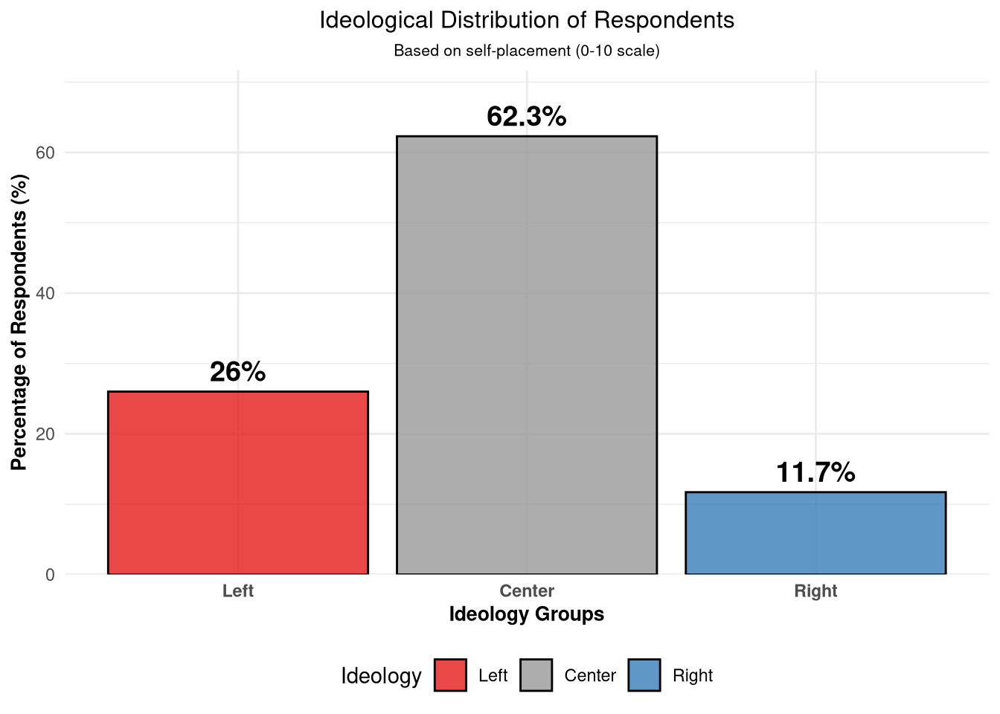
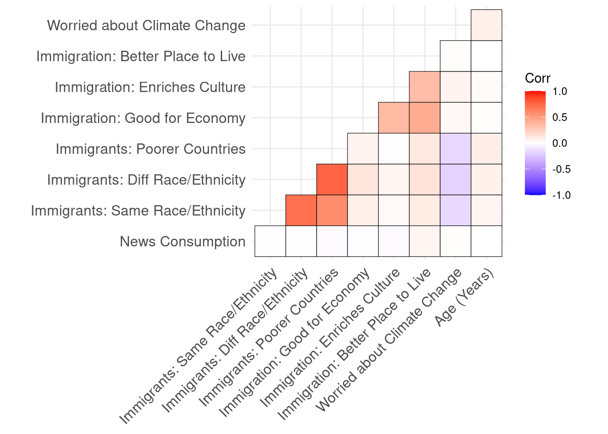
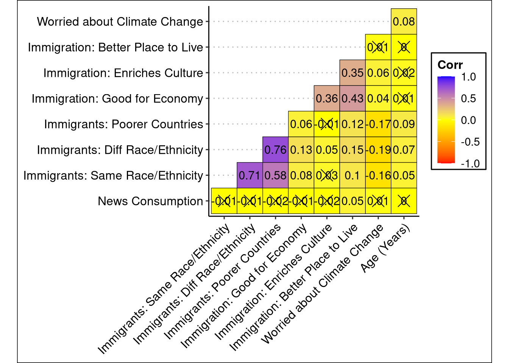
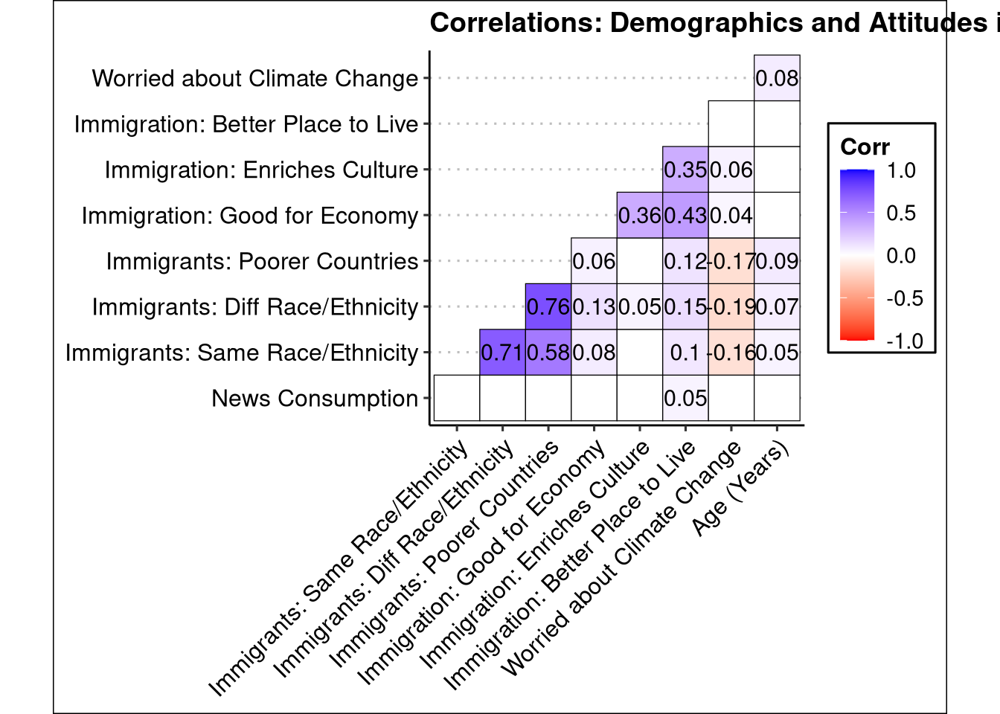
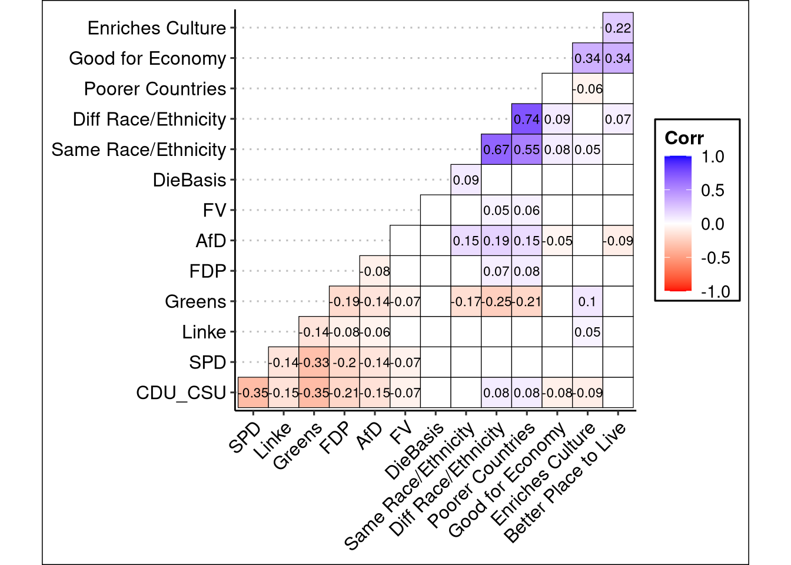
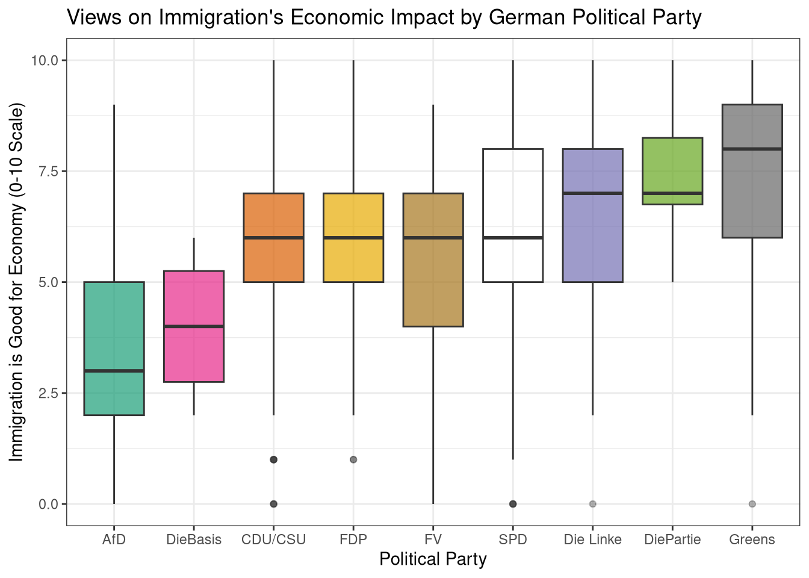

library(tidyverse)
library(ggplot2)
library(ggcorrplot)
library(readr)
library(tidyverse)
library(ggthemes)
df <- read_csv("~/Downloads/ESS11e04_1-subset (6)/ESS11e04_1-subset.csv")6 Exercise 6
6.1 Polarization in Public Opinion
Let us play around with this: Link to test Different Varaible Combinations
Link to Work with the same data
6.1.1 Calculating and Visualisation of Polarization
library(tidyverse)
df_pol_group <- df %>%
mutate(
Political_Bloc = case_when(
prtvgde2 %in% c(2, 3, 4) ~ "Left", # SPD, Die Linke, Greens
prtvgde2 %in% c(1, 5) ~ "Center", # CDU/CSU, FDP
prtvgde2 %in% c(6, 7) ~ "Right", # AfD, FV
TRUE ~ NA_character_ # Excludes 55, 66, 77, 88, 99
)
) %>%
mutate(Political_Bloc = factor(Political_Bloc, levels = c("Left", "Center", "Right"))) %>%
drop_na(Political_Bloc, imbgeco) %>%
filter(imbgeco <= 10) %>%
filter(impcntr <= 4)
bloc_distribution <- df_pol_group %>%
count(Political_Bloc) %>%
mutate(Percentage = round((n / sum(n)) * 100, 1))
print(bloc_distribution)# A tibble: 3 × 3
Political_Bloc n Percentage
<fct> <int> <dbl>
1 Left 859 55.5
2 Center 585 37.8
3 Right 104 6.7ggplot(df_pol_group, aes(x = imbgeco, fill = Political_Bloc)) +
geom_density(alpha = 0.5, color = "black") +
scale_fill_manual(values = c(
"Left" = "#E41A1C", # Standard Red
"Center" = "#999999", # Neutral Grey
"Right" = "#377EB8" # Standard Blue
)) +
theme_minimal() +
labs(
title = "Immigration Attitudes by Political Bloc in Germany",
x = "0 (Bad for Economy)to 10 (Good for Economy)",
y = "Density (Concentration of Voters)",
fill = "Political Bloc"
) +
theme(
legend.position = "top",
plot.title = element_text(face = "bold")
)
ggplot(df_pol_group, aes(x = impcntr, fill = Political_Bloc)) +
geom_density(alpha = 0.5, color = "black") +
scale_fill_manual(values = c(
"Left" = "#E41A1C", # Standard Red
"Center" = "#999999", # Neutral Grey
"Right" = "#377EB8" # Standard Blue
)) +
theme_minimal() +
labs(
title = "Immigration from Poor Countries",
x = "1 (Many) to 4 (None)",
y = "Density (Concentration of Voters)",
fill = "Political Bloc"
) +
theme(
legend.position = "top",
plot.title = element_text(face = "bold")
)
6.1.2 Using the Left-Right Scale
df_ideology <- df %>%
filter(lrscale <= 10) %>%
mutate(
Ideology = case_when(
lrscale %in% 0:3 ~ "Left",
lrscale %in% 4:6 ~ "Center",
lrscale %in% 7:10 ~ "Right"
)
) %>%
mutate(Ideology = factor(Ideology, levels = c("Left", "Center", "Right"))) %>%
drop_na(Ideology)
ideology_distribution <- df_ideology %>%
count(Ideology) %>%
mutate(Percentage = round((n / sum(n)) * 100, 1))
print(ideology_distribution)# A tibble: 3 × 3
Ideology n Percentage
<fct> <int> <dbl>
1 Left 602 26
2 Center 1444 62.3
3 Right 271 11.7theme_graphs <- theme(
axis.text.x = element_text(face = "bold"),
axis.title.x = element_text(color = "black", size = 10, face = "bold"),
axis.title.y = element_text(color = "black", size = 10, face = "bold"),
plot.title = element_text(color = "black", size = 12, hjust = 0.5),
plot.subtitle = element_text(color = "black", size = 8, hjust = 0.5),
plot.caption = element_text(face = "italic"),
legend.position = 'bottom'
)
ggplot(ideology_distribution, aes(x = Ideology, y = Percentage, fill = Ideology)) +
geom_col(color = "black", alpha = 0.8) +
geom_text(aes(label = paste0(Percentage, "%")), vjust = -0.5, size = 5, fontface = "bold") +
scale_fill_manual(values = c(
"Left" = "#E41A1C",
"Center" = "#999999",
"Right" = "#377EB8"
)) +
scale_y_continuous(expand = expansion(mult = c(0, 0.15))) +
theme_minimal() +
labs(
title = "Ideological Distribution of Respondents",
subtitle = "Based on self-placement (0-10 scale)",
x = "Ideology Groups",
y = "Percentage of Respondents (%)"
) +
theme_graphs
6.2 How to estimate corellations
#About ggcorrplot:
#ggcorrplot(
# corr,
# method = c("square", "circle"),
# type = c("full", "lower", "upper"),
# ggtheme = ggplot2::theme_minimal,
# title = "",
# show.legend = TRUE,
# legend.title = "Corr",
# show.diag = NULL,
# colors = c("blue", "white", "red"),
# outline.color = "gray",
# hc.order = FALSE,
# hc.method = "complete",
# lab = FALSE,
# lab_col = "black",
# lab_size = 4,
# p.mat = NULL,
# sig.level = 0.05,
# insig = c("pch", "blank"),
# pch = 4,
# pch.col = "black",
# pch.cex = 5,
# tl.cex = 12,
# tl.col = "black",
# tl.srt = 45,
# digits = 2,
# as.is = FALSE
#)
#cor_pmat(x, ...)ESS_Subset <- df %>%
select(nwspol, imsmetn, imdfetn, impcntr, imbgeco, imueclt, imwbcnt, wrclmch, agea) %>%
drop_na()
new_ess_names <- c("News Consumption",
"Immigrants: Same Race/Ethnicity",
"Immigrants: Diff Race/Ethnicity",
"Immigrants: Poorer Countries",
"Immigration: Good for Economy",
"Immigration: Enriches Culture",
"Immigration: Better Place to Live",
"Worried about Climate Change",
"Age (Years)")
colnames(ESS_Subset) <- new_ess_names
ess_cor_mat <- round(cor(ESS_Subset, use = "pairwise.complete.obs"), 2)
ess_cor_mat News Consumption
News Consumption 1.00
Immigrants: Same Race/Ethnicity -0.01
Immigrants: Diff Race/Ethnicity -0.01
Immigrants: Poorer Countries -0.02
Immigration: Good for Economy -0.01
Immigration: Enriches Culture -0.02
Immigration: Better Place to Live 0.05
Worried about Climate Change 0.01
Age (Years) 0.00
Immigrants: Same Race/Ethnicity
News Consumption -0.01
Immigrants: Same Race/Ethnicity 1.00
Immigrants: Diff Race/Ethnicity 0.71
Immigrants: Poorer Countries 0.58
Immigration: Good for Economy 0.08
Immigration: Enriches Culture 0.03
Immigration: Better Place to Live 0.10
Worried about Climate Change -0.16
Age (Years) 0.05
Immigrants: Diff Race/Ethnicity
News Consumption -0.01
Immigrants: Same Race/Ethnicity 0.71
Immigrants: Diff Race/Ethnicity 1.00
Immigrants: Poorer Countries 0.76
Immigration: Good for Economy 0.13
Immigration: Enriches Culture 0.05
Immigration: Better Place to Live 0.15
Worried about Climate Change -0.19
Age (Years) 0.07
Immigrants: Poorer Countries
News Consumption -0.02
Immigrants: Same Race/Ethnicity 0.58
Immigrants: Diff Race/Ethnicity 0.76
Immigrants: Poorer Countries 1.00
Immigration: Good for Economy 0.06
Immigration: Enriches Culture -0.01
Immigration: Better Place to Live 0.12
Worried about Climate Change -0.17
Age (Years) 0.09
Immigration: Good for Economy
News Consumption -0.01
Immigrants: Same Race/Ethnicity 0.08
Immigrants: Diff Race/Ethnicity 0.13
Immigrants: Poorer Countries 0.06
Immigration: Good for Economy 1.00
Immigration: Enriches Culture 0.36
Immigration: Better Place to Live 0.43
Worried about Climate Change 0.04
Age (Years) 0.01
Immigration: Enriches Culture
News Consumption -0.02
Immigrants: Same Race/Ethnicity 0.03
Immigrants: Diff Race/Ethnicity 0.05
Immigrants: Poorer Countries -0.01
Immigration: Good for Economy 0.36
Immigration: Enriches Culture 1.00
Immigration: Better Place to Live 0.35
Worried about Climate Change 0.06
Age (Years) 0.02
Immigration: Better Place to Live
News Consumption 0.05
Immigrants: Same Race/Ethnicity 0.10
Immigrants: Diff Race/Ethnicity 0.15
Immigrants: Poorer Countries 0.12
Immigration: Good for Economy 0.43
Immigration: Enriches Culture 0.35
Immigration: Better Place to Live 1.00
Worried about Climate Change 0.01
Age (Years) 0.00
Worried about Climate Change Age (Years)
News Consumption 0.01 0.00
Immigrants: Same Race/Ethnicity -0.16 0.05
Immigrants: Diff Race/Ethnicity -0.19 0.07
Immigrants: Poorer Countries -0.17 0.09
Immigration: Good for Economy 0.04 0.01
Immigration: Enriches Culture 0.06 0.02
Immigration: Better Place to Live 0.01 0.00
Worried about Climate Change 1.00 0.08
Age (Years) 0.08 1.00ess_cor_pmat <- cor_pmat(ESS_Subset)
ess_cor_pmat News Consumption
News Consumption 0.00000000
Immigrants: Same Race/Ethnicity 0.58915564
Immigrants: Diff Race/Ethnicity 0.71488181
Immigrants: Poorer Countries 0.41522030
Immigration: Good for Economy 0.61536693
Immigration: Enriches Culture 0.27829872
Immigration: Better Place to Live 0.02578124
Worried about Climate Change 0.66649571
Age (Years) 0.81201262
Immigrants: Same Race/Ethnicity
News Consumption 5.891556e-01
Immigrants: Same Race/Ethnicity 0.000000e+00
Immigrants: Diff Race/Ethnicity 0.000000e+00
Immigrants: Poorer Countries 4.270722e-216
Immigration: Good for Economy 5.006068e-05
Immigration: Enriches Culture 1.208148e-01
Immigration: Better Place to Live 3.843969e-07
Worried about Climate Change 7.304502e-16
Age (Years) 2.599713e-02
Immigrants: Diff Race/Ethnicity
News Consumption 7.148818e-01
Immigrants: Same Race/Ethnicity 0.000000e+00
Immigrants: Diff Race/Ethnicity 0.000000e+00
Immigrants: Poorer Countries 0.000000e+00
Immigration: Good for Economy 1.975129e-10
Immigration: Enriches Culture 9.703458e-03
Immigration: Better Place to Live 1.008012e-13
Worried about Climate Change 3.844541e-21
Age (Years) 3.114974e-04
Immigrants: Poorer Countries
News Consumption 4.152203e-01
Immigrants: Same Race/Ethnicity 4.270722e-216
Immigrants: Diff Race/Ethnicity 0.000000e+00
Immigrants: Poorer Countries 0.000000e+00
Immigration: Good for Economy 6.413178e-03
Immigration: Enriches Culture 7.990581e-01
Immigration: Better Place to Live 8.534104e-09
Worried about Climate Change 9.266440e-18
Age (Years) 6.689700e-06
Immigration: Good for Economy
News Consumption 6.153669e-01
Immigrants: Same Race/Ethnicity 5.006068e-05
Immigrants: Diff Race/Ethnicity 1.975129e-10
Immigrants: Poorer Countries 6.413178e-03
Immigration: Good for Economy 0.000000e+00
Immigration: Enriches Culture 2.187129e-76
Immigration: Better Place to Live 3.943530e-112
Worried about Climate Change 3.454516e-02
Age (Years) 5.950443e-01
Immigration: Enriches Culture
News Consumption 2.782987e-01
Immigrants: Same Race/Ethnicity 1.208148e-01
Immigrants: Diff Race/Ethnicity 9.703458e-03
Immigrants: Poorer Countries 7.990581e-01
Immigration: Good for Economy 2.187129e-76
Immigration: Enriches Culture 0.000000e+00
Immigration: Better Place to Live 1.852489e-70
Worried about Climate Change 4.151630e-03
Age (Years) 4.568239e-01
Immigration: Better Place to Live
News Consumption 2.578124e-02
Immigrants: Same Race/Ethnicity 3.843969e-07
Immigrants: Diff Race/Ethnicity 1.008012e-13
Immigrants: Poorer Countries 8.534104e-09
Immigration: Good for Economy 3.943530e-112
Immigration: Enriches Culture 1.852489e-70
Immigration: Better Place to Live 0.000000e+00
Worried about Climate Change 6.319391e-01
Age (Years) 9.932108e-01
Worried about Climate Change Age (Years)
News Consumption 6.664957e-01 8.120126e-01
Immigrants: Same Race/Ethnicity 7.304502e-16 2.599713e-02
Immigrants: Diff Race/Ethnicity 3.844541e-21 3.114974e-04
Immigrants: Poorer Countries 9.266440e-18 6.689700e-06
Immigration: Good for Economy 3.454516e-02 5.950443e-01
Immigration: Enriches Culture 4.151630e-03 4.568239e-01
Immigration: Better Place to Live 6.319391e-01 9.932108e-01
Worried about Climate Change 0.000000e+00 3.844079e-05
Age (Years) 3.844079e-05 0.000000e+00ggcorrplot(ess_cor_mat, type = "lower", outline.col = 'black')Warning: `aes_string()` was deprecated in ggplot2 3.0.0.
ℹ Please use tidy evaluation idioms with `aes()`.
ℹ See also `vignette("ggplot2-in-packages")` for more information.
ℹ The deprecated feature was likely used in the ggcorrplot package.
Please report the issue at <https://github.com/kassambara/ggcorrplot/issues>.
ggcorrplot(ess_cor_mat,
type = "lower",
p.mat = ess_cor_pmat,
outline.col = "black",
ggtheme = ggthemes::theme_clean(),
colors = c("red", "yellow", "blue"),
lab = TRUE)
ggcorrplot(ess_cor_mat,
type = "lower",
p.mat = ess_cor_pmat,
sig.level = 0.05,
insig = "blank",
outline.col = "black",
ggtheme = ggthemes::theme_clean(),
colors = c("red", "white", "blue"),
lab = TRUE,
lab_size = 4,
title = 'Correlations: Demographics and Attitudes in ESS Data')
Let is make dummary variables for each party and then plot the correlations
table(df$prtvgde2)
1 2 3 4 5 6 7 8 9 55 66 77 88
434 399 90 396 165 88 21 4 12 24 514 147 126 # We can check what each number refers to on the ESS Portal
df_parties <- df %>%
filter(prtvgde2 %in% 1:8) %>%
mutate(
# Create binary dummy variables for the major parties
CDU_CSU = ifelse(prtvgde2 == 1, 1, 0),
SPD = ifelse(prtvgde2 == 2, 1, 0),
Linke = ifelse(prtvgde2 == 3, 1, 0),
Greens = ifelse(prtvgde2 == 4, 1, 0),
FDP = ifelse(prtvgde2 == 5, 1, 0),
AfD = ifelse(prtvgde2 == 6, 1, 0),
FV = ifelse(prtvgde2 == 7, 1, 0),
DieBasis = ifelse(prtvgde2 == 8, 1, 0),
DiePartie = ifelse(prtvgde2 == 9, 1, 0),
) %>%
select(CDU_CSU, SPD, Linke, Greens, FDP, AfD, FV, DieBasis, DiePartie,
imsmetn, imdfetn, impcntr, imbgeco, imueclt, imwbcnt) %>%
drop_na()
colnames(df_parties)[10:15] <- c(
"Same Race/Ethnicity",
"Diff Race/Ethnicity",
"Poorer Countries",
"Good for Economy",
"Enriches Culture",
"Better Place to Live")
party_cor_mat <- round(cor(df_parties), 2)Warning in cor(df_parties): the standard deviation is zeroparty_p_mat <- cor_pmat(df_parties)Warning in cor(x, y): the standard deviation is zeroWarning in cor(x, y): the standard deviation is zero
Warning in cor(x, y): the standard deviation is zero
Warning in cor(x, y): the standard deviation is zero
Warning in cor(x, y): the standard deviation is zero
Warning in cor(x, y): the standard deviation is zero
Warning in cor(x, y): the standard deviation is zero
Warning in cor(x, y): the standard deviation is zero
Warning in cor(x, y): the standard deviation is zero
Warning in cor(x, y): the standard deviation is zero
Warning in cor(x, y): the standard deviation is zero
Warning in cor(x, y): the standard deviation is zero
Warning in cor(x, y): the standard deviation is zero
Warning in cor(x, y): the standard deviation is zeroggcorrplot(party_cor_mat,
type = "lower",
p.mat = party_p_mat,
sig.level = 0.05,
insig = "blank",
outline.col = "black",
ggtheme = ggthemes::theme_clean(),
colors = c("red", "white", "blue"),
lab = TRUE,
lab_size = 3)
df_viz <- df %>%
mutate(
Party = case_when(
prtvgde2 == 1 ~ "CDU/CSU",
prtvgde2 == 2 ~ "SPD",
prtvgde2 == 3 ~ "Die Linke",
prtvgde2 == 4 ~ "Greens",
prtvgde2 == 5 ~ "FDP",
prtvgde2 == 6 ~ "AfD",
prtvgde2 == 7 ~ "FV",
prtvgde2 == 8 ~ "DieBasis",
prtvgde2 == 9 ~ "DiePartie",
TRUE ~ NA_character_
)
) %>%
drop_na(Party, imbgeco) %>%
filter(imbgeco <= 10)
ggplot(df_viz, aes(x = reorder(Party, imbgeco, FUN = median), y = imbgeco, fill = Party)) +
geom_boxplot(alpha = 0.7, outlier.alpha = 0.2) +
theme_bw() +
scale_fill_brewer(palette = "Dark2") +
labs(title = "Views on Immigration's Economic Impact by German Political Party",
x = "Political Party",
y = "Immigration is Good for Economy (0-10 Scale)") +
theme(legend.position = "none")Warning in RColorBrewer::brewer.pal(n, pal): n too large, allowed maximum for palette Dark2 is 8
Returning the palette you asked for with that many colors